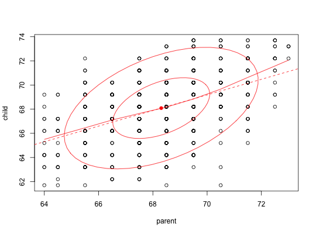
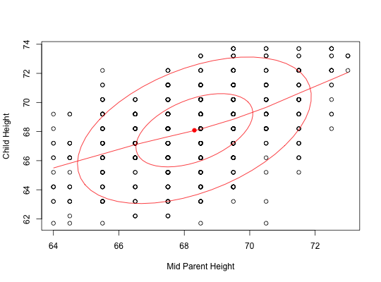
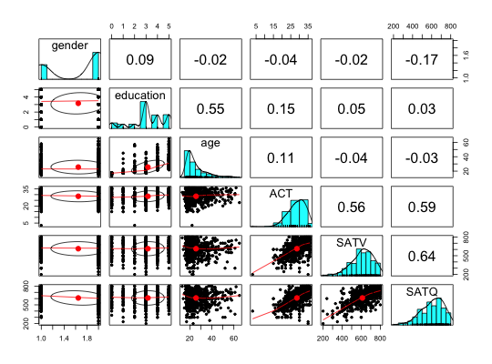

For teaching correlation, it is useful to draw ellipses around the mean to reflect the correlation. This variation of the ellipse function from John Fox's car package does so. Input may be either two vectors or a matrix or data.frame. In the latter cases, if the number of variables >2, then the ellipses are done in the pairs.panels function. Ellipses may be added to existing plots.
The minkowski function is included as a generalized ellipse.
ellipses(x, y = NULL, add = FALSE, smooth=TRUE, lm=FALSE,data=TRUE, n = 2, span=2/3, iter=3, col = "red", xlab =NULL,ylab= NULL, ...) minkowski(r=2,add=FALSE,main=NULL,xl=1,yl=1)
| x | a vector,matrix, or data.frame |
|---|---|
| y | Optional second vector |
| add | Should a new plot be created, or should it be added to? |
| smooth | smooth = TRUE -> draw a loess fit |
| lm | lm=TRUE -> draw the linear fit |
| data | data=TRUE implies draw the data points |
| n | Should 1 or 2 ellipses be drawn |
| span | averaging window parameter for the lowess fit |
| iter | iteration parameter for lowess |
| col | color of ellipses (default is red |
| xlab | label for the x axis |
| ylab | label for the y axis |
| … | Other parameters for plotting |
| r | r=1 draws a city block, r=2 is a Euclidean circle, r > 2 tends towards a square |
| main | title to use when drawing Minkowski circles |
| xl | stretch the x axis |
| yl | stretch the y axis |
Ellipse dimensions are calculated from the correlation between the x and y variables and are scaled as sqrt(1+r) and sqrt(1-r).
A single plot (for 2 vectors or data frames with fewer than 3 variables. Otherwise a call is made to pairs.panels.
Galton, Francis (1888), Co-relations and their measurement. Proceedings of the Royal Society. London Series, 45, 135-145.
Adapted from John Fox's ellipse and data.ellipse functions.
data(galton) ellipses(galton,lm=TRUE)ellipses(galton$parent,galton$child,xlab="Mid Parent Height", ylab="Child Height") #input are two vectorsdata(sat.act) ellipses(sat.act) #shows the pairs.panels ellipsesminkowski(2,main="Minkowski circles")minkowski(1,TRUE)minkowski(4,TRUE)